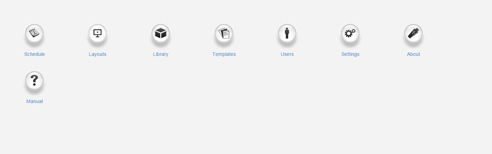

User Dashboards
Dashboards are assigned to Users/User Groups to serve as a Homepage and allow access to only the permitted parts of the CMS for the assigned User.
Status Dashboard
The Status Dashboard is the default User Dashboard for Super Admin Users and is intended as a high-level view of the system for administration purposes. This dashboard gives an overview for connected Displays, added Users of the CMS and provides information relating to Library and Bandwidth usage as well as Display Activity:

Scroll down the Status Dashboard to access further charts to view Display Status and Display Content Status:

Get further breakdowns by clicking on either of these charts:
Use the Displays Page link to be redirected straight to the Displays grid in the CMS!
Icon Dashboard
The Icon Dashboard is a default User Dashboard which is used for all newly assigned Users and is intended as a Launcher into other areas of the CMS.

The icons shown within this dashboard are managed by the enabled Feature access for the User.
Media Manager Dashboard
The Media Manager Dashboard gives an overview of the current status of Library Media in the CMS to easily see number and size of items as well as easily view any unreleased or unused media:
Playlist Dashboard
The Playlist Dashboard can be assigned to Users who belong to the Playlist Dashboard User Group so that they can only upload or replace media in Playlists they have been given access to from enabled Share options.
The Playlist Dashboard gives a very restricted view of the CMS with a User only able to select specific Playlists to manage using the drop-down menu.

In order to determine how many media files a User can upload to a Playlist, Spots need to be configured by adding the Playlist Widget to a Playlist.
NOTE: Administrators need to ensure that the Playlist Widget has been configured with Spots and added to a Playlist in a Layout before a User can add/replace Media using the Playlist Dashboard.